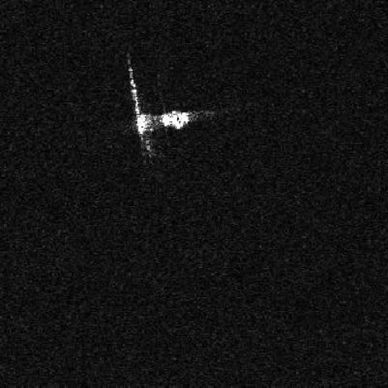
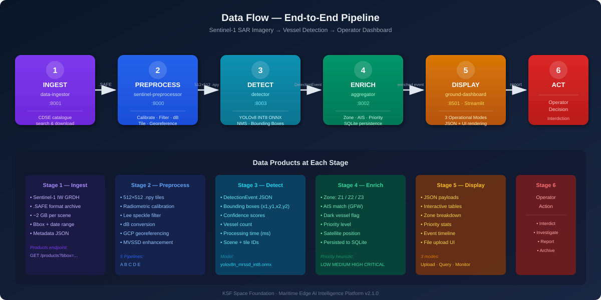
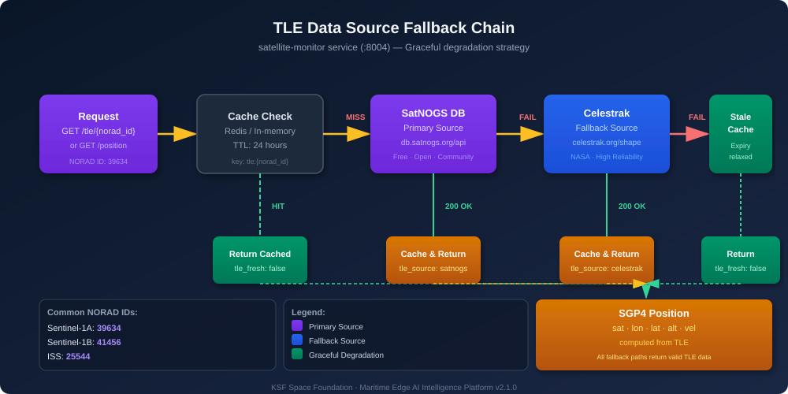
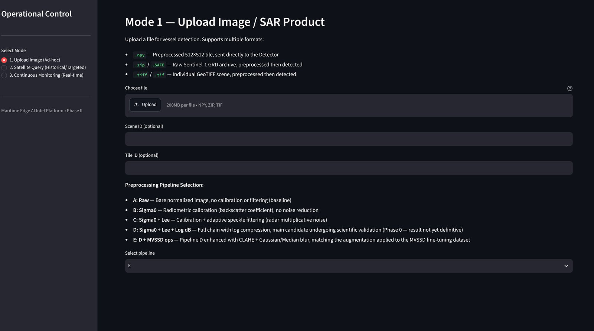
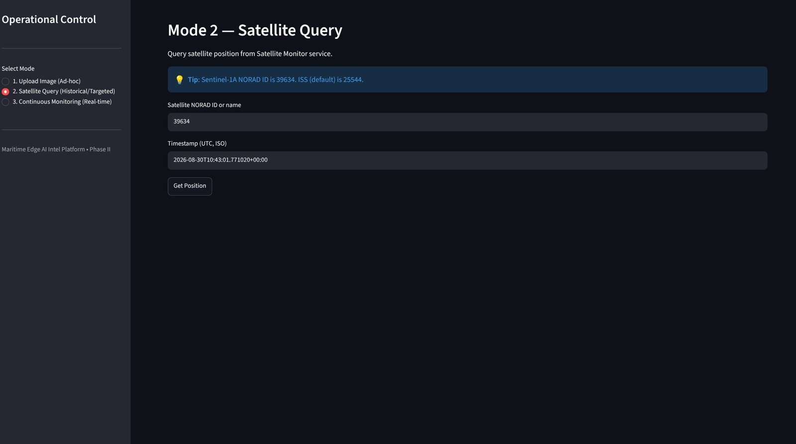
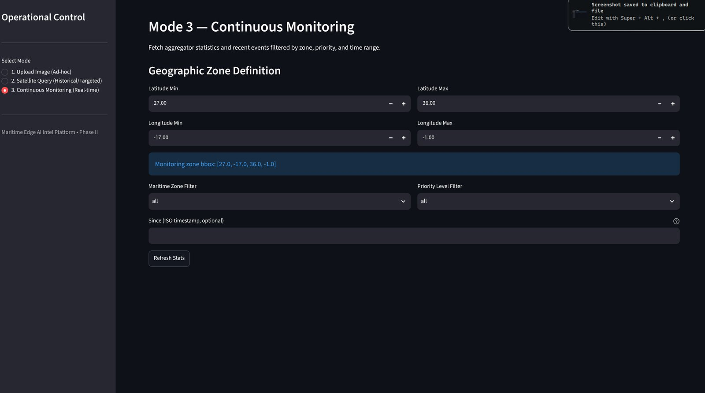
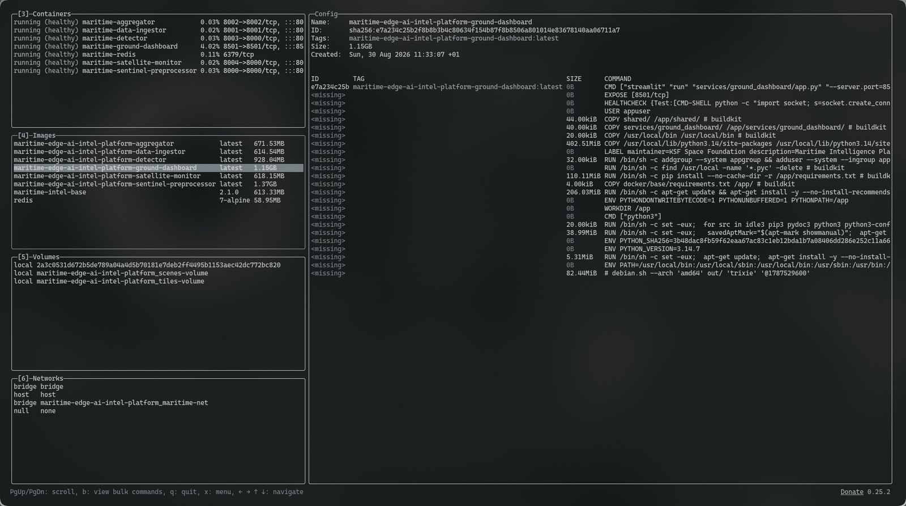

Maritime Edge AI
Intelligence Platform
Real-time vessel detection from Sentinel-1 SAR satellite imagery using orbital edge AI and YOLOv8 INT8 ONNX inference

Maritime Domain Awareness and the Dark Vessel Problem
Dark vessel detection targets the ships that threaten maritime domain awareness — the ones that stop broadcasting.
Why AIS-Based Vessel Monitoring Fails
Real-time vessel monitoring leans on the Automatic Identification System (AIS) — a cooperative technology that only reports what a crew chooses to broadcast; vessels that want to disappear simply switch it off.
A "dark vessel" has disabled its AIS transponder, spoofed its location, or altered its transmissions — and shows up in illegal fishing, smuggling, and sanctions evasion.
A dark vessel is only caught by sensors that need no cooperation from the ship — this platform looks to space.
{kind=link}
Sentinel-1 SAR Satellite Imagery for Vessel Detection
Optical satellites are blinded by clouds and darkness; Sentinel-1 SAR imagery sees through both — the foundation for operational vessel detection.
{kind=link}


The Data Source: Copernicus Data Space Ecosystem
Raw radar arrives through the Copernicus Data Space Ecosystem, the platform's primary data pipeline. Scenes are extracted, audited, and converted into YOLO-compatible training assets spanning diverse sea states, viewing angles, and radar noise.
Why SAR Sees What Optics Miss
Sentinel-1 SAR is an active sensor: it emits microwave pulses and measures their backscatter instead of waiting for sunlight. Microwaves pass through clouds, fog, and darkness; smooth water scatters them away and stays dark, while a ship's metallic hull acts as a corner reflector and blazes back.
VH Polarization for Maximum Contrast
Cross-polarization (VH) suppresses wind- and wave-driven sea clutter, maximizing the signal-to-noise ratio of metallic vessels — the contrast that makes AI detection viable.
Orbital Edge AI: Running Vessel Detection in Space
The key architectural decision is where the computation happens: the platform uploads intelligence, not data.
Legacy monitoring failed on bandwidth: gigabytes of radar queued for minutes-long ground passes arrived hours to days late. Edge AI for maritime surveillance breaks that chain by running inference on the satellite itself.
Thermal
Without atmosphere to dissipate heat, heavy computation can overheat the satellite.
Power
Small solar panels impose tight power budgets, prohibiting power-hungry GPUs.
Compute
Onboard processors are typically low-power, CPU-only systems.
Bandwidth
The system must extract intelligence from GBs of imagery and transmit only KBs of metadata.
The Paradigm Shift: Upload Intelligence, Not Data
Onboard inference extracts the intelligence from gigabytes of SAR imagery, deletes the raw scene, and transmits only kilobytes of metadata — turning a bandwidth problem into an information pipeline.
A Microservices Pipeline for Orbit
The platform is 6 containerized microservices orchestrated with Docker Compose and connected by a Redis publish/subscribe broker. Section 04 walks through each one.
Low-value scenes — empty ocean, AIS-compliant traffic — send only a tiny metadata ping. A dark vessel entering a protected zone triggers a secondary segmentation model that crops the region for a richer visual payload.
Microservices Architecture for Maritime Surveillance
Six containerized services orchestrated with Docker Compose, sharing a Redis cache and health checks — from radar product to maritime event.
{kind=link}

Data Ingestor
Searches and downloads Sentinel-1 products from the Copernicus Data Space Ecosystem.
GET /products
POST /ingest
Sentinel Preprocessor
Radiometric calibration, speckle filtering, dB conversion, tiling, and GCP georeferencing.
POST /preprocess
GET /pipelines
Detector
INT8-quantized YOLOv8 ONNX inference on preprocessed 512×512 .npy tiles.
POST /detect
GET /health
Satellite Monitor
TLE caching and SGP4 satellite position computation with graceful fallback.
GET /tle/{id}
GET /position
Aggregator
Zone classification, GFW AIS matching, event persistence, and statistics.
POST /events
GET /stats
Ground Dashboard
Streamlit UI with 3 operational modes: Upload, Satellite Query, Monitoring.
Mode 1: Upload
Mode 2: Query
Resilience in Orbit: Satellite Positions That Never Go Stale
The Satellite Monitor computes SGP4 positions from TLE elements with a fallback chain — SatNOGS → Celestrak → cached elements — that keeps positions live through outages.
{kind=link}

Zone Classification: Knowing Where an Event Happens
Detections are classified as Z1 territorial waters, Z2 exclusive economic zone, or Z3 high seas — separating routine traffic from a dark vessel crossing a protected boundary.

YOLOv8 INT8 ONNX Inference for SAR Ship Detection
The mathematical heart of the platform — extreme optimization for CPU-bound inference on CubeSat hardware.
Ship detection runs on YOLOv8n — an anchor-free architecture that predicts object centers directly, ideal for radar scenes where vessels appear at any orientation and size.
The Physics of INT8 Quantization
Compressing precision to INT8 retains high Mean Average Precision (mAP) — proof that INT8 ONNX inference works for space edge computing.
{kind=link}
Ground Station Dashboard for Maritime Vessel Monitoring
The heavy lifting happens in orbit, so the ground station stays light: a Streamlit dashboard for real-time maritime vessel monitoring.
Upload Mode
Upload .npy tiles or raw .SAFE/.tiff SAR products and pick a pipeline (A–E): detect directly or preprocess first.
{kind=link}

Satellite Query
Query any NORAD ID (e.g. Sentinel-1A: 39634) for real-time SGP4 positions with TLE caching.
{kind=link}

Continuous Monitoring
Live event list with zone and priority filters, plus aggregated statistics per zone.
{kind=link}

Analysts stop squinting at raw Sentinel-1 SAR scenes: the dashboard presents coordinates, AIS correlation, dark vessel alerts, and segmented crops — ready for an interception decision.
Testing, CI/CD, and Containerized Operations
122 tests across 9 suites, automated linting and SAST, a 60% coverage gate — enforced on every push.
Six services stay reliable only if a pipeline proves it: every commit runs through GitHub Actions, and the Docker Compose stack is exercised cleanly.
{kind=link}
The Stack Running as One Fleet
All 6 microservices plus Redis run healthy under one Docker Compose fleet — from data ingestor to dashboard.
{kind=link}

The Future of Maritime Edge AI
From data gathering to onboard reasoning — the shift that will secure the oceans.
The platform closes the latency gap that has haunted satellite surveillance of the oceans. SAR sees through weather and darkness, a resilient microservices architecture keeps the pipeline alive, and INT8-quantized inference fits a CubeSat's CPU — the station receives alerts, not gigabytes.
SAR for All-Weather Detection
Microwaves penetrate clouds, fog, and darkness — operational reliability by physics.
Microservices Resilience
6 containerized stages over Redis pub/sub isolate faults and scale independently.
INT8 Quantization
75% memory reduction with maintained accuracy — CPU-only inference on CubeSats.
Dark Vessel Detection
Radar detections cross-referenced with AIS flag non-cooperative vessels instantly.
The question is no longer how much data a satellite downloads, but how much understanding it synthesizes in orbit — data gathering giving way to onboard reasoning.
Download Full Report
Get the complete written report as a PDF — covering architecture, implementation, testing, and findings.
📥 Download PDF Reportksf-space-maritime-edge-ai-intel-platform-report.pdf